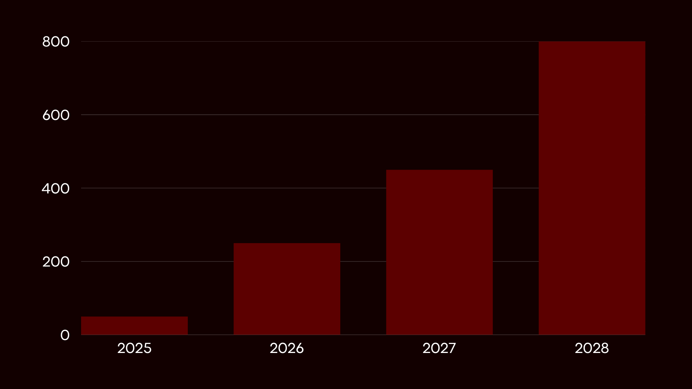

Conheça o Explodoron: O Robô Competidor da RoboCup!
O Explodoron nasceu da paixão por tecnologia e desafios. Nossa equipe se uniu com o objetivo de criar um robô capaz de superar obstáculos e se destacar na competição RoboCup. Inspirado em estratégias de defesa e ataque, o Explodoron foi projetado para ser rápido, resistente e inteligente, enfrentando adversários com precisão. Cada componente foi cuidadosamente escolhido para garantir desempenho máximo. Venha conhecer a história, os bastidores da construção e todas as funcionalidades desse robô que promete surpreender!
Galeria de Imagens
Sistema de Armas
O Explodoron conta com um sistema de armas desenvolvido para maximizar sua performance durante as batalhas da RoboCup. O principal destaque é o martelo motorizado, capaz de atingir alvos com precisão através de um sistema de acionamento elétrico controlado remotamente. Além disso, o robô incorpora um escudo retrátil que oferece proteção adicional contra impactos diretos, tornando o Explodoron uma fortaleza móvel. Todos os mecanismos são integrados ao sistema embarcado, permitindo respostas rápidas e seguras durante a competição.
Hardware Utilizado
- Microcontrolador: ESP32 Wi-Fi/Bluetooth
- Estrutura: MDF
- Motores: 2 Motores DC de alta torque para locomoção e controle do martelo e escudo
- Bateria: 6 Pilhas AA
- Rodas: Poliuretano antiderrapante
- Sensores: Chave de fim de curso
- Módulo Bluetooth: Controle do robô via celular
- Painel de LEDs: Indicação de status operacional
Vídeos do Robô
Construção do Explodoron
Explodoron em movimento via controle de celular
Nosso Grupo
Equipe responsável pelo desenvolvimento do Explodoron:
Comunicação
Nossa equipe está pronta para se comunicar de forma simples e convincente com clientes, distribuidores, assistência técnica e imprensa. Oferecemos diversos canais para contato e suporte eficiente:
Marketing Digital & Suporte
Cuidamos do cliente em todas as etapas: atendimento imediato, suporte técnico especializado 24h, assistência técnica em campo e remota, canal exclusivo para distribuidores e assessoria de imprensa dedicada.
- Suporte ao cliente: chat, e-mail, telefone
- Assistência técnica especializada
- Canal exclusivo para distribuidores
- Assessoria de imprensa via press@explodoron.com
Depoimentos
“O atendimento do Explodoron foi rápido e eficiente, recomendo para qualquer distribuidor!” – Maria S., distribuidora.
“Recebi suporte técnico em minutos, mesmo fora do horário comercial.” – João P., cliente final.
Plano Estatístico e Projeções de Mercado
As projeções de vendas do Explodoron foram realizadas por meio de análise preditiva, utilizando inteligência artificial para avaliar dados do setor, tendências de competições internacionais e histórico de vendas de robôs similares. Com isso, garantimos previsibilidade e segurança para nossos parceiros e investidores.
- 2026: 250 unidades
- 2027: 450 unidades
- 2028: 800 unidades
Informações para Investidores
- Nível I: Informações gerais sobre o produto, equipe e mercado (aberto a todos).
-
Nível II: Informações detalhadas e projeções iniciais, acessíveis mediante assinatura de termo de sigilo (NDA).
Solicitar acesso via NDA -
Nível III: Projeções completas, diferenciais e dados confidenciais, disponíveis somente após contrato firmado.
Agendar reunião para acesso completo